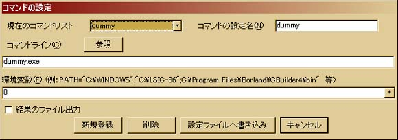
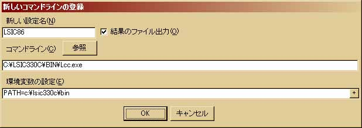
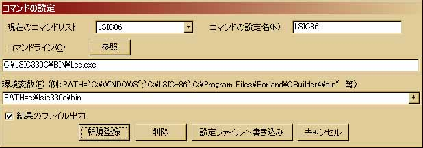
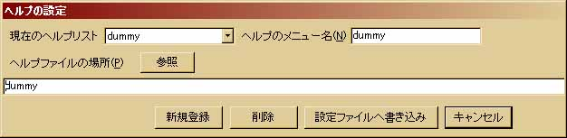
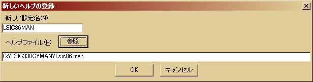
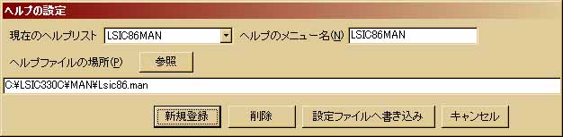
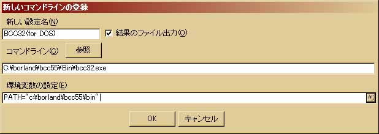
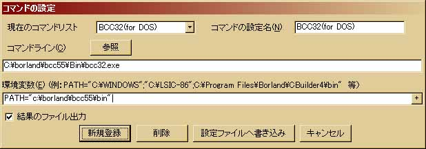
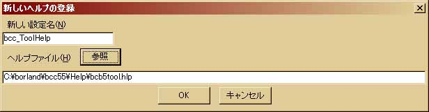
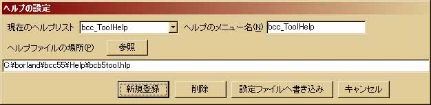

Ceta セットアップ手順書
３．Ceta の各種設定
このセクションでは「２．コンパイラのインストール」でインストールした
「LSIC-86」「Borland C++ Compiler」を Ceta の「コマンド」メニューへ
登録する方法について説明します。
Ceta はあくまでも「汎用」であり、コンパイルを「支援」するソフトに過
ぎません。特定のコンパイラに依存しない代わりに、個々のコンパイラの設
定をユーザー自身が調べ、責任を持って設定する必要があることを忘れない
で下さい。このセクションでコンパイラの登録、設定の基本を学んで頂きた
いと思います。
３−１Ａ．LSIC-86のコマンドメニューへの登録
３−２Ａ．LSIC-86のヘルプ（マニュアルファイル）の登録
３−１Ｂ．Borland C++ Compilerのコマンドメニューへの登録
３−２Ｂ．Borland C++ Compilerのヘルプの登録
３−３．コンパイラのオプションを設定するには。
では、いよいよ「Ceta」を起動して下さい。
LSIC-86は２−１Ａ、２−２Ａの例で示したように「c:¥lsic330c」にインストールされているもの
とします。まず、「コマンド」メニューから「コマンドの設定」をクリックして下さい。
下のようなダイアログボックスが表示されます。

dummy 設定を「削除」ボタンで削除した後、「新規登録」ボタンをクリック
して下さい。「新しいコマンドラインの登録」ダイアログボックスが表示され
ます。ここで、新しいコンパイラやプログラムの設定を行います。
下にLSIC-86の設定例を示します。今回はc:¥lsic330cにインストールしたので
環境変数にPATH=c:¥lsic330c¥binが設定されていることに注意して下さい。
また、「結果のファイル出力」チェックボックスはコンパイラを登録する場合
必ずチェックして下さい。コンパイルメッセージが、「コンパイルメッセージ表示
エリア」に表示されます。逆にコンパイラとして使用しないコマンドライン
（インターネットエクスプローラなど）を指定するときはチェックを外して下さ
い。コマンドの起動中、パソコンがフリーズする可能性があります。
なお、フォルダの設定の際はDOS8.3形式のファイル名について(LSIC-86)
を必ず参照して下さい。
LSIC-86をc:¥lsic330cにインストールしたときの設定例

以上までで「新しいコマンドラインの登録」ダイアログボックスに必要な
設定は指定し終えました。「OK」ボタンをクリックするとダイアログボックスが
閉じられ、下のように「コマンドの設定」ダイアログボックスが開かれます。
もし設定に不満が有れば、このダイアログボックス上でも変更が可能です。
設定に不満がなければ、「設定ファイルへ書き込み」ボタンをクリック
して下さい。異常がなければ設定ファイル(cmdline.ini)への書き込み完了とCeta の再起動
を促すメッセージが表示され、ダイアログボックスが閉じられます。メッセージ
ボックスの「OK」ボタンをクリックし、Ceta を再起動して下さい。「コマンド」
メニューに「LSIC86」が新たに加わっているはずです。

LSIC-86には単純テキストファイルの「lsic86.man」ファイルが付属しています。
コンパイラのオプションや、勉強が進むに連れて必要になって来るであろう、
コンパイラの詳細な仕様が書かれているので「ヘルプ」メニューに登録しておきます。
「ヘルプ」メニューから「ヘルプの設定」をクリックして下さい。下のような
「ヘルプの設定ダイアログボックスが表示されます。dummy 設定を「削除」
ボタンで削除した後、「新規登録」ボタンをクリックして下さい。

新しいヘルプの登録ダイアログボックスが開きます。ここでヘルプの設定を行います。
下にlsic86.manの設定例を示します。今回の例ではLSIC-86のインストールフォルダは
c:¥lsic330cでした。
LSIC-86のインストールフォルダがc:¥lsic330cの時の設定例

設定が良ければ「OK」ボタンをクリックして下さい。下のように仮登録され
ます。この段階でも修正が可能です。設定に不満がなければ「設定ファイルへ書き込み」
ボタンをクリックして下さい。異常がなければ設定ファイル(helpmenu.ini)への
書き込み完了とCeta の再起動を促すメッセージが表示され、ダイアログボックス
が閉じられます。メッセージボックスの「OK」ボタンをクリックし、Ceta を
再起動して下さい。「ヘルプ」メニューに「LSIC86MAN」が追加され、クリックすると
専用のビューアが起動します。

お疲れさまでした。以上でLSIC-86のコンパイラ、ヘルプの登録は完了です。
設定完了まで後少しです。４−１Ａ．LSIC-86の確認
へお進みいただき、実際にサンプルファイルをコンパイルしてみて異常が
ないかどうか確認します。
では、いよいよ「Ceta」を起動して下さい。
Borland C++ Compiler は２−１Ｂ、２−２Ｂの例で示したように「c:¥borland¥bcc55」
にインストールされているものとします。まず、「コマンド」メニューから「コマンド
の設定」をクリックして下さい。下のようなダイアログボックスが表示されます。
dummy 設定を「削除」ボタンで削除した後、「新規登録」ボタンをクリック
して下さい。「新しいコマンドラインの登録」ダイアログボックスが表示され
ます。ここで、新しいコンパイラやプログラムの設定を行います。
下にBorland C++ Compilerの設定例を示します。今回はc:¥borland¥bcc55に
インストールしたので環境変数にPATH="c:¥borland¥bcc55bin"が設定されて
いることに注意して下さい(LSIC-86と異なりWindowsロングファイルネームが
普通に使えます。" "や、複数指定の「;」も利用できます）。
また、「結果のファイル出力」チェックボックスはコンパイラを登録する場合
必ずチェックして下さい。コンパイルメッセージが、「コンパイルメッセージ表示
エリア」に表示されます。逆にコンパイラとして使用しないコマンドライン
（インターネットエクスプローラなど）を指定するときはチェックを外して下さ
い。コマンドの起動中、パソコンがフリーズする可能性があります。
Borland C++ Compilerをc:¥borland¥bcc55cにインストールしたときの設定例

以上までで「新しいコマンドラインの登録」ダイアログボックスに必要な
設定は指定し終えました。「OK」ボタンをクリックするとダイアログボックスが
閉じられ、下のように「コマンドの設定」ダイアログボックスが開かれます。
もし設定に不満が有れば、このダイアログボックス上でも変更が可能です。
設定に不満がなければ、「設定ファイルへ書き込み」ボタンをクリック
して下さい。異常がなければ設定ファイル(cmdline.ini)への書き込み完了とCeta の再起動
を促すメッセージが表示され、ダイアログボックスが閉じられます。メッセージ
ボックスの「OK」ボタンをクリックし、Ceta を再起動して下さい。「コマンド」
メニューに「BCC32(for DOS)」が新たに加わっているはずです。

Borland C++ Compilerにはコンパイラやリンカ、その他のツールの詳細な
オプションが解説された「bcb5tool.hlp」が付属しています。高度な設定の
コンパイルやWindowsプログラムの作成、複数ファイルのリンクなど学習が
進むと必要になる情報が含まれているので、ぜひ「ヘルプ」メニューに登録
しておきましょう。
「ヘルプ」メニューから「ヘルプの設定」をクリックして下さい。下のような
「ヘルプの設定ダイアログボックスが表示されます。dummy 設定を「削除」
ボタンで削除した後、「新規登録」ボタンをクリックして下さい。
新しいヘルプの登録ダイアログボックスが開きます。ここでヘルプの設定を行います。
下にbcb5tool.hlpの設定例を示します。bcb5tool.hlpはインストールフォルダ
（今回の例ではc:¥borland¥bcc55）の中のHelpフォルダの中にあります。
Borland C++ Compilerのインストールフォルダがc:¥borland¥bcc55の時の設定例

設定が良ければ「OK」ボタンをクリックして下さい。下のように仮登録され
ます。この段階でも修正が可能です。設定に不満がなければ「設定ファイルへ書き込み」
ボタンをクリックして下さい。異常がなければ設定ファイル(helpmenu.ini)への
書き込み完了とCeta の再起動を促すメッセージが表示され、ダイアログボックス
が閉じられます。メッセージボックスの「OK」ボタンをクリックし、Ceta を
再起動して下さい。「ヘルプ」メニューに「bcb_ToolHelp」が追加されます。

お疲れさまでした。以上でBorland C++ Compilerのコンパイラ、ヘルプの登録
は完了です。設定完了まで後少しです。
４−１Ｂ．Borland C++ Compilerの確認
へお進みいただき、実際にサンプルファイルをコンパイルしてみて異常が
ないかどうか確認します。
コンパイラのオプションを設定するには、「コマンドの設定」ダイアログボックスの
「コマンドライン」編集エリアで設定します。多くのコンパイラではコンパイルコマンド
の後に半角スペースを一つ空け、オプションを設定します。
＜例その壱＞・・・LSIC-86でアセンブラソースコードを生成する。
c:¥yourlsic¥bin¥lcc.exe -S
＜例その弐＞・・・Borland C++ CompilerでWindows(純WIN32API)プログラムを作成する。
c:¥your_bcc_directory¥bin¥bcc32.exe -W
＜例その参＞・・・Borland C++ Compilerで実行ファイルなどの出力ディレクトリを指定する。
c:¥your_bcc_directory¥bin¥bcc32.exe -n"c:¥your_folder¥your_output_dir"
＜例その四＞・・・例その弐と例その参を併用する。
c:¥your_bcc_directory¥bin¥bcc32.exe -W -n"c:¥your_folder¥your_output_dir"
４．コンパイル動作の確認へ進む